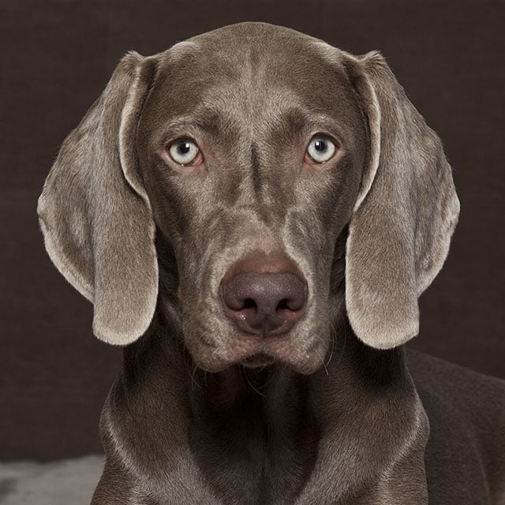

Esse cachorro simpático e enérgico adora a companhia do tutor! Se você pensa em ter um cãozinho animado, apegado à família e com uma bela pelagem cinza, o Weimaraner é a opção ideal. Esse cachorro de médio para grande porte é super conhecido pela simpatia e obediência fora do comum, além, é claro, da beleza inconfundível. Certamente, com todos esses atributos, a raça tem tudo para conquistar o novo tutor e os demais integrantes da casa. Essa amizade é ainda maior quando a convivência se dá em um ambiente espaçoso e por meio de uma rotina carregada de atividades físicas. Saiba mais sobre o cachorro neste guia completo da Petz!
Prepare o fôlego, tutor! Ao adotar um Weimaraner, é preciso ter em mente que esse cão é bastante ativo e adora praticar exercícios. Trata-se de um animal que precisa de uma rotina com alto nível de gasto energético. O cãozinho dessa raça curte muito espaços abertos para corridas. Os passeios e brincadeiras também são importantes, principalmente como forma de interação com o tutor.
Nosso bebezão de porte grande não late muito e talvez não seja o mais recomendado para a função de guarda. De todo modo, a adaptabilidade dele ao novo lar é um ponto muito positivo desde que o espaço seja adequado. Tanto o Weimaraner adulto como filhote devem ser treinados continuamente. Segundo o American Kennel Club, a raça adora ser incentivada e a criatividade do tutor nas atividades é primordial. Esse hábito ajuda a manter a saúde física e mental do bichinho sempre em dia, além de contribuir com a obediência do pet no ambiente doméstico.
Fizemos um gráfico nivelando de 0 a 5 as características da raça, veja a baixo!
A raça de cachorro Weimaraner tem características bem delimitadas pelos padrões cinológicos oficiais. Trata-se de um cão de grande porte, adaptado ao trabalho e à exercícios intensos, ele tem o corpo musculoso e aparência imponente. Esse cachorrinho possui um focinho moderadamente alongado, com orelhas dobradas e altas. Os olhos podem ter tons de âmbar claro, cinza ou azul acinzentado. Uma característica marcante do animal é sua cauda de tamanho menor (quando comparado a outros cães do mesmo grupo) e patinhas traseiras inclinadas para trás.
Cuidar da higiene do Weimaraner envolve banhos regulares com produtos apropriados, atenção especial à limpeza dos ouvidos para evitar infecções, e monitoramento constante de cortes e arranhões devido à sua natureza agitada. Check-ups periódicos são recomendados pelos clubes da raça para identificar precocemente problemas gástricos, complicações no quadril, e realizar avaliações oftalmológicas e da tireoide. Estes cuidados contribuem para a saúde geral e o bem-estar do animal.
Decidiu adotar um Weimaraner filhote? Antes de tudo, adapte a sua casa para que o ambiente do pet seja acessível e seguro. Proteja pontos como escadas e batentes, evite deixar fios e aparelhos perigosos ao alcance do pequeno e, claro, separe um cantinho para a caminha do animal. Outra precaução básica, mas muito importante, é se manter atento quanto às vacinas do peludinho. O bichinho também deve ser vermifugado e passar por exames veterinários para saber se ele está com a saúde em dia!